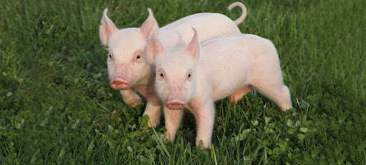

Xin chào mọi người, mình là Nghi.
Mình là một người vui vẻ và có nhiều sở thích riêng.
Mình rất thích màu hồng vì nó mang lại cảm giác dễ thương và năng lượng tích cực.
Ngoài ra, mình cũng đam mê vẽ và thường nghe nhạc để thư giãn sau giờ học.
Tuy nhiên, mình không thích màu đen, không thích làm quá nhiều bài tập và đặc biệt là rất ghét ăn khổ qua.
Xin chào mọi người, mình là Nhi.
Mình là người có tính cách nhẹ nhàng và khá đơn giản.
Mình rất thích màu tím vì nó đem lại cảm giác dễ chịu và dễ thương.
Mình cũng thích ngủ và vẽ — hai điều giúp mình thư giãn và sáng tạo hơn sau những giờ học mệt mỏi.
Tuy nhiên, mình không thích màu đen và cũng không thích ăn socola.